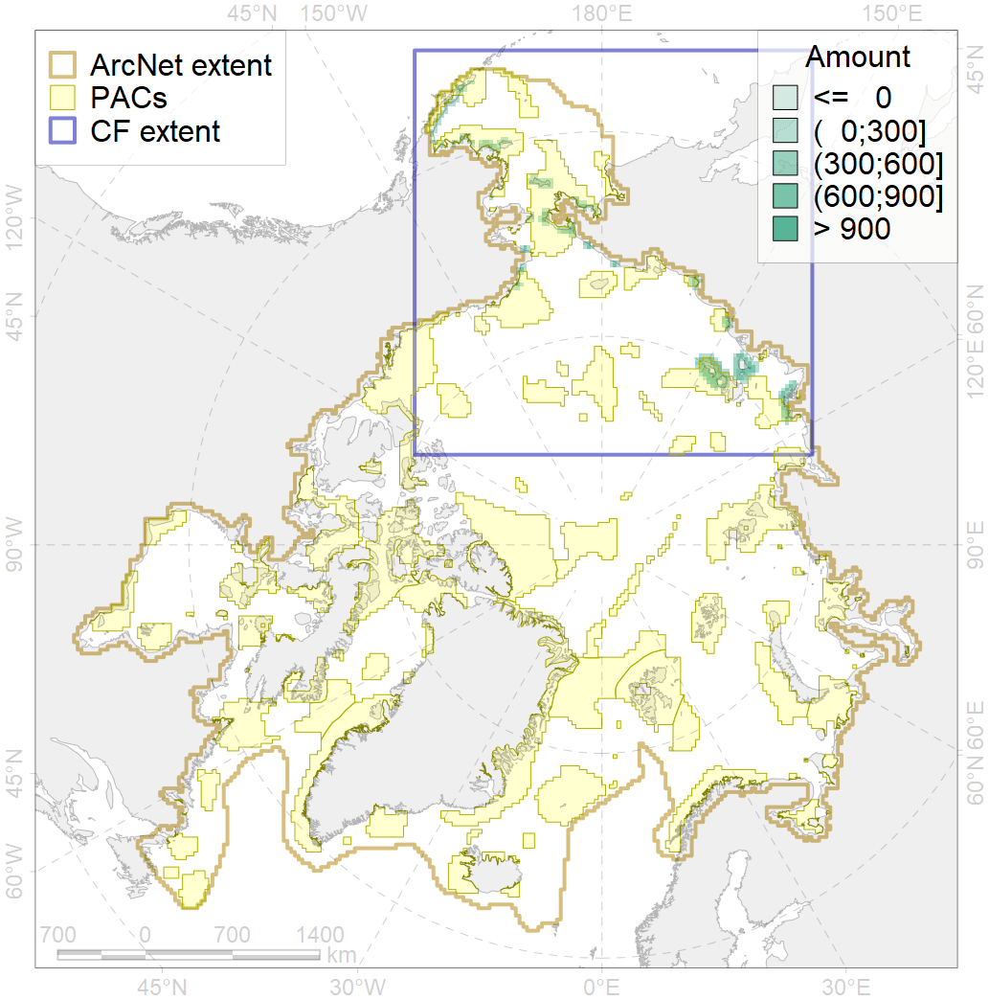
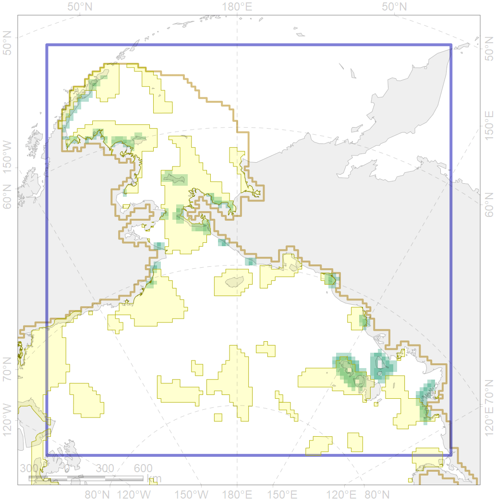

6045

| CF ID | 6045 |
| CF Name | Stellers eider (Polysticta stelleri) Pacific moulting&migration stopovers |
| Time Period | 2017 |
| Source(s) | Dyagterev et al 1999, Smith et al 2017 |
| Seasonality | July-October, April |
| Depth Horizon | <50 m |
| Methodology | Field Data |
| Author Name | Gavrilo, Tertitski |
| Notes | |
| Conservation Target Set in the Scenario | 0.528 |
| Conservation Target Achieved in the Scenario | 0.569 (Scenario: 107.8%) |
| PAC ID | Proportion in the PAC | Contribution to ArcNet Target Achievement | PAC’s Contribution to the Achieved Target |
|---|---|---|---|
| 1 | 1.7% | 3.2% | 2.9% |
| 3 | 9.3% | 17.1% | 15.9% |
| 5 | 13.2% | 24.0% | 22.3% |
| 9 | 3.5% | 3.7% | 3.5% |
| 10 | 2.6% | 4.6% | 4.2% |
| 11 | 22.1% | 41.8% | 38.8% |
| 12 | 5.0% | 9.3% | 8.6% |
| 60 | 1.3% | 2.2% | 2.1% |
| inner | 58.6% | 106.0% | 98.4% |
| outer | 41.4% | 1.8% | 1.6% |